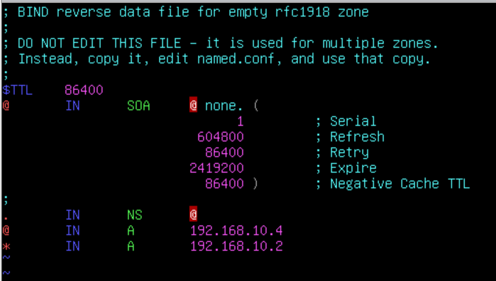
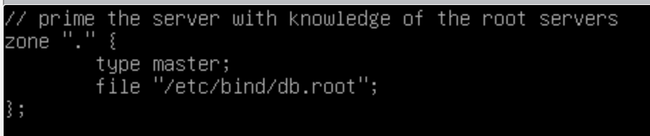

写在前面的小建议
拿到服务器首先记得修改主机名与 IP！
vim 使用不习惯不用强求，没人拦着你用 nano
如果你是 vim 用户，记得在新系统里安装好 vim 软件包：
vimvim-commonvim-scrtptsctags，会加快写配置文件的时间，事半功倍防火墙放在最后配置，限制 SSH 访问策略也放在最后配置，但免密登录什么时候配都可以
可以把所有机器的 SSH 全部打开，在 Client 上 SSH 上去配置会快一点
登录
- Username：root
- Password：ChinaSkill20!
- Username：Chinaskill20
- Password：Chinaskill20!
除特别指定外，所有账号密码均为 Chinaskill20!
系统配置
- Region：China
- Locale：en_US.UTF-8
- KeyMap：English US
当任务为配置 SSL 或 TLS，如要求隐藏所有警告，请小心执行。
竞赛环境
物理机：
文件夹路径：
虚拟机:[datastore1] ( VMware ESXi )
ISO 镜像：[DATA]ISO/ ( VMware ESXi )
软件：D:\软件 ( Host )
项目任务描述
拓扑见样题
基本配置：
| Device | Hostname | System | FQDN | IP Address | Service |
|---|---|---|---|---|---|
| Server01 | Server01 | 预装 Linux | Server01.sdskills.com | 172.16.100.201/25 | DNS Web SSH LDAP DBMS |
| Server02 | Server02 | 待安装 Linux | Server02.sdskills.com | 172.16.100.202/25 | RAID5 NFS FTP SSH |
| Server03 | Server03 | 预装 Linux | Server03.skills.com | 192.168.10.3/28 | NTP OpenVPN |
| Server04 | Server04 | 待安装 Linux | Server04.skills.com | 192.168.10.4/28 | DNS Web |
| Rserver | Rserver | 预装 Linux | Rserver.sdskills.com | 172.16.100.254/25 192.168.10.2/28 10.10.10.254/24 |
firewall DHCP SSH CA |
| Client | Client | Linux Desktop | 10.10.100.x | none |
网络：
| Network | CIDR |
|---|---|
| office | 10.10.100.0/24 |
| service | 172.16.100.128/25 |
| internet | 192.168.10.0/28 |
Client Task
Client 已预装简易 Debian，要求如下：
- 要求能访问所有服务器，用于测试应用服务
- 为主机安装 GNOME 桌面环境
- 调整分辨率至 1280x768
- 测试 DHCP，IPv4 地址为自动获取
- 测试 DNS，安装 dnsutils 与 dig 命令行程序
- 测试 Web，安装 Firefox 浏览器，cUrl 命令行工具，在任何时候进行访问测试不允许弹出安全警告信息
- 测试 SSH，安装 SSH 命令行工具
- 测试 VPN 安装 VPN 客户端
- 测试 FTP，安装 FTP 客户端
- 测试文件共享，安装 Samba 命令行工具
- 测试 Mail，安装 Thunderbird，并能正常进行邮件收发
- 其他测试采用默认设定
题解
先配置主机名
$ hostnamectl set-hostname client
并且不要忘记修改 hosts 文件
$ vi /etc/hosts
默认的 vi 运行在 vi 兼容模式下，如果使用很别扭的话可安装 vim 软件包，或直接在 vi 中输入 :set nocp 关闭 vi 兼容模式。
将原来的主机名 debian 修改为新的主机名 client
此题目仅安装一堆软件包即可
但一部分题目需要后续做完其他服务器配置后返回来进行，所以这一阶段如果 Client 作为首题只能做一部分。
可以先安装所需软件包：
$ apt install gnome dnsutils firefox-esr curl openssh-client ftp thunderbird openvpn smbclient
安装完后 reboot 重启后进入桌面环境
$ reboot
桌面环境默认无法使用 root 账户登录，使用 chinaskill20 可登录进入桌面环境。
右键选择 Display Settings，打开显示器设置，将分辨率改为 1280x768
在配置后续机型时，会回来此机配置后续项目。
Client Task
- 要求能访问所有服务器，用于测试应用服务
- 为主机安装 GNOME 桌面环境
- 调整显示分辨率为 1280x768
- 测试 DHCP，网卡 IPv4 地址为自动获取
- 测试 DNS，安装 dnsutils 与 dig 命令行工具
- 测试 Web，安装 Firefox 浏览器，curl 命令行测试工具，在任何时候进行访问测试时不允许弹出安全警告信息
- 测试 SSH，安装 SSH 命令行工具
- 测试 VPN，安装 OPENVPN 客户端工具软件
- 测试 FTP，安装 lftp 客户端工具
- 测试文件共享，安装 smbclient 客户端工具
- 测试 Mail，安装 Thunderbird，并能正常进行邮件收发
- 其他设定均采用默认设定
题解
安装桌面环境
$ apt install gnome
重启即可
Rserver Task
- Network
- 请根据基本配置信息配置服务器主机名，网卡 IP 地址配置，域名等
- 开启路由转发功能
- iptables
- 默认阻挡所有流量
- 添加必要的 NAT 规则，使 Office 和 Service 网络能够访问 Internet
- 添加必要的规则以满足其他服务所需，禁止创建放行所有流量的规则
- DHCP
- 为客户端分配 IP 范围为 10.10.100.1 - 10.10.100.50
- 按照实际配置 DNS 与 GATEWAY
- 配置 Client 固定获取 IP 地址为 10.10.100.51
- SSH
- 安装 SSH 正常监听
- 限制除 Client 以外的客户端登录，其他主机都应拒绝
- 配置 Client 只能在 Chinaskills20 用户可以免密登录，端口为 2222，且具有 root 控制权限
- CA
- CA 根证书路径 /CA/cacert.pem
- 签发数字证书，签发者信息
- 国家 = CN
- 单位 = Inc
- 组织机构 = www.skills.com
- 公用名 = Skill Global Root CA
题解
Network
首先查看网卡名称，使用 ip link
$ ip link
1: lo: (LOOPBACK,UP,LOWER_UP> mtu 65536 qdisc noqueue state UNKNOWN mode DEFAULT group default qlen 1000
link/loopback 00:00:00:00:00:00 brd 00:00:00:00:00:00
2: ens192: <BROADCAST,MULTICAST> mtu 1500 qdisc noop state DOWN mode DEFAULT group default qlen 1000
link/ether 00:0c:29:a4:90:60 brd ff:ff:ff:ff:ff:ff
2: ens224: <BROADCAST,MULTICAST> mtu 1500 qdisc noop state DOWN mode DEFAULT group DEFAULT qlen 1000
link/ether 00:0c:29:a4:90:Ba brd ff:ff:ff:ff:ff:ff
4: ens256: <BROADCAST,MULTICAST> mtu 1500 qdisc noop state DOWN mode DEFAULT group default qlen 1000
link/ether 00:0c:29:a4:90:94 brd ff:ff:ff:ff:ff:ff
共三块网卡，分别按照对应网络设定。
编辑 /etc/network/interfaces
$ vi /etc/network/interfaces
auto ens192
iface ens192 inet static
address 172.16.100.254/25
auto ens224
iface ens224 inet static
address 10.10.100.254/24
auto ens256
iface ens256 inet static
address 192.168.10.2/28
接下来启用网卡
$ ifup ens192 ens224 ens256
配置主机名
$ hostnamectl set-hostname Rserver
修改 /etc/hosts,将 FQDN 写入 hosts 文件
修改 127.0.1.1 debian 这一行，修改为
127.0.1.1 Rserver.sdskills.com Rserver
打开内核的 IPv4 转发，编辑 /etc/sysctl.conf，28 行处的 net.ipv4.ip_forward=1 去掉前面的注释，保存文件。
使配置文件生效
$ sysctl -p
这台电脑实际上要作为拓扑中的接入路由器来使用，因此后续的网关设备全部指定此计算机
FQDN 在 Linux 上是通过 DNS 解析实现的，验证配置使用 hostname -f
iptables
这道题做出来的不多，我怀疑应该是没看懂题目。
这个实验环境是将 192.168.10.0/28 网段看作公有 Internet，将 service 以及 office 接入互联网，因此应在 Rserver 配置 NAT 使其通过 Rserver 的 IP 地址接入互联网，能理解到这个程度那么做起来也就不难了。
iptables 配置最烦人的点就是必须按顺序将防火墙规则写进 iptables 配置中，一旦写错就要清除配置重来，不像现在的 firewalld 是并行处理的，所以实际使用的时候先全部放行，等待全部配置完成之后再来思考防火墙规则可能更好。
比较方便的方法是写一个配置规则的 Shell 脚本，这样后续修改起来会相对方便。
#!/bin/bash
# 待补全
# 清除现有规则
iptables -F
iptables -X
iptables -Z
# 设定默认规则
iptables -P INPUT DROP
iptables -P OUTPUT DROP
iptables -P FORWARD DROP
# 设定规则
iptables -A INPUT -i lo -j ACCEPT # 放行所有本机流量
iptables -A INPUT -m state --state RELATED,ESTABLISHED -j ACCEPT # 放行状态流量
iptables -A INPUT -i ens224 -p tcp -dport 2222 -j ACCEPT # 放行 SSH 流量
DHCP
安装软件包 isc-dhcp-server
$ apt install isc-dhcp-server
没有做配置的情况下，安装时会提示服务无法启动，这是正常的。
要修改的文件有 /etc/default/isc-dhcp-server 与 /etc/dhcp/dhcpd.conf
首先修改 /etc/default/isc-dhcp-server 指定监听网卡
INTERFACESv4="ens224"
接下来编辑 /etc/dhcp/dhcpd.conf
在文件 50 行处有一个写的较完整的示例配置，可以直接复制使用
subnet 10.10.100.0 netmask 255.255.255.0 {
range 10.10.100.1 10.10.100.50;
option domain-name-servers 172.16.100.201;
option domain-name "sdskills.com";
option routers 10.10.100.254;
option broadcast-address 10.10.100.255;
default-lease-time 600;
max-lease-time 7200;
}
host client {
hardware ethernet 00:0c:29:4c:e3:a7;
fixed-address 10.10.100.51;
}
其中，client 的 MAC 地址可通过在 Client 上使用 ip link 查看
启动服务，并确保开机启动
$ systemctl start isc-dhcp-server
$ systemctl enable isc-dhcp-server
SSH
每次修改配置文件时，使用 systemctl reload ssh 使配置生效
编辑 /etc/ssh/sshd_config
修改 Port 为 2222
临时修改 PermitRootLogin 为 yes
拷贝 SSH key
# 在 Client 上
$ ssh-keygen
# 无脑回车
$ ssh-copy-id root@10.10.100.254 -p 2222
# 先在 Rserver 端允许 Root 账户登录，后再修改回来
编辑 /etc/hosts.deny 来限制登录
sshd:ALL except 10.10.100.51:deny
# 意为除去 10.10.100.51 主机以外的其他所有主机均禁止访问本机的 SSH 服务
确保服务开机启动
$ systemctl start ssh
$ systemctl enable ssh
CA
在配置 CA 之前，确保当前时间正确，时区正确，最好先配置 NTP 服务器再回来配置 CA
修改 /usr/lib/ssl/openssl.cnf
第 28 行处，修改根目录为 /CA
创建子目录：
$ cd /CA
$ mkdir newcerts certs crl private
并创建两个文件：
$ touch ./index.txt
$ echo 1000 > serial
生成根证书私钥
$ openssl genrsa -out private/cakey.pem 4096
使用上一步生成的私钥签发证书：
$ openssl req -x509 -new -key /CA/private/cakey.pem -out /CA/cacert.pem
Server01
Network
配置 IP 与主机名跟上面方法相同，不多赘述
DNS
Debian 将 Bind 的配置文件分成了很多份
对于 DNS 转发器，修改 /etc/bind/named.conf.options,文件中有一段被注释掉的 forwarders,取消注释后修改即可
将正向与反向解析配置放进 /etc/bind/named.conf.local，如下:
zone "sdskills.com" {
type master;
file "/etc/bind/db.sdskills.com";
};
zone "100.16.172.in-addr.aroa" {
type master;
file "/etc/bind/db.172.16.100";
};
不要忘记末尾的分号！
接下来创建区域文件，从已有的区域文件复制修改即可
$ cp /etc/bind/db.local /etc/bind/db.sdskills.com
$ cp /etc/bind/db.127 /etc/bind/db.172.16.100
将 SOA 修改为自己的域名 ( 注意域名后的点！ )
添加自己需要的记录即可
使用 named-checkconf 和 named-checkzone 来检查语法格式是否正确
root@Server01:~# named-checkconf
root@Server01:~# named-checkzone sdskills.com /etc/bind/db.sdskills.com
zone sdskills.com/IN: loaded serial 2
OK
root@Server01:~#
当前的 Bind 版本默认只允许本地与已知的本地局域网访问服务器进行查询，因此需要修改配置文件，改回以前的放行模式：
修改 /etc/bind/named.conf.options，在后面增加三行：
options {
...
allow-recursion { any; };
allow-query { any; };
allow-query-cache { any; };
...
};
```
放行所有主机。
## apache
题目中需要使用 LDAP 做认证，配置完 LDAP 后再来
```sh
apt install apache2
新建 webuser 用户，指定为系统用户并禁止登录
$ useradd -r webuser -s /sbin/nologin
修改 /etc/apache2/envvars
将指定运行用户与组的变量修改
export APACHE_RUN_USER=webuser
export APACHE_RUN_GROUP=webuser
网站目录放在 NFS 共享中，先做 Server02 再回来
挂载 /data/share
写入 /etc/fstab
172.16.100.202:/data/share /data/share nfs defaults,_netdev 0 0
$ mount -a
写 index.sh
$ mkdir /data/share/webroot
$ vim /data/share/webroot/index.sh
#!/bin/bash
# This is index.sh
echo "Content-type: text/html"
echo ""
echo "Current System Time is: $(date +"%F %r")"
修复目录权限，并使脚本可执行
$ chown -R webuser:webuser /data/share/webroot
$ chmod 775 /data/share/webroot/index.sh
配置 Apahce，使 CGI 脚本可执行，并允许处理 Shell 脚本
$ vim /etc/apache2/conf-enabled/security.conf
<Dictory "/data/share/webroot">
AllowOverride None
Options +ExecCGI -MultiViews
AddHandler cgi-script .cgi .sh .pl
Require all granted
</Directory>
配置虚拟主机们，加上 SSL。
签发证书
$ openssl req -new -key Server01.pem -out http.csr
$ openssl ca -in http.csr -out http.pem
将证书传回 Server01 后，修复权限并放在对应目录
chmod 777 *.pem
cp http.pem /etc/ssl/certs/http_sdskills_com.pem
Apache 提供了 SSL 的虚拟主机模板，在 `/etc/apache2/sites-available/default-ssl.conf
将这个文件复制一份，然后修改
cp /etc/apache2/sites-available/default-ssl.conf /etc/apache2/sites-available/www.sdskills.com.conf
vim /etc/apache2/sites-available/www.sdskills.com
原文件内容很多，只截取需要注意的部分
<VirtualHost _default_:443>
ServerName www.sdskills.com
ServerAlias *.sdskills.com
DocumentRoot /data/share/webroot
SSLEngine On
SSLCertificateFile /etc/ssl/certs/http_sdskills_com.pem
SSLCertificateKeyFile /etc/ssl/certs/Rserver.key
</VirtualHost>
启用 SSL 模块，启用刚才修改的网站配置文件
$ a2enmod ssl
$ a2ensite www.sdskills.com.conf
修改原始默认网站文件，将 80 端口访问重定向到 HTTPS
$ vim /etc/apache2/sites-enabled/000-default.conf
<VirtualHost *:80>
ServerName www.sdskills.com
ServerAlias *.sdskills.com
# 把原有配置注释
# DocumentRoot /var/www/html
# 加入
redirect permanent / https://www.sdskills.com/
</VirtualHost>
配置 LDAP 验证
修改刚才写好的 /etc/apache2/conf-enabled/security.conf
<Dictory "/data/share/webroot">
AllowOverride None
Options +ExecCGI -MultiViews
AddHandler cgi-script .cgi .sh .pl
# 增加
AuthType basic
AuthBasicProvider ldap
AuthLDAPUrl "ldaps://localhost/ou=People,dc=sdskills,dc=com"
AuthName LDAP
# 注释掉这行，重写
#Require all granted
Require valid-user
</Directory>
# 在外面增加
LDAPVerifyServerCert off
MariaDB
$ apt install mariadb-server
$ mysql_secure_installation
增加一个超级用户用于网页端管理，新版的 MariaDB 与 MySQL 已不允许用户使用 root 在命令行以外的场合登录
$ mariadb -uroot -p
CREATE USER '新用户'@'%' IDENTIFIED BY '新用户的密码';
GRANT ALL PRIVILEGES ON *.* TO '新用户'@'%' WITH GRANT OPTION;
接下来托管 phpMyAdmin 即可使用新创建的用户登录
PHP
$ apt install php libapache2-mod-php php-mysql
托管 phpMyAdmin 需要安装 php-xml 模块
$ apt install php-xml
$ systemctl restart apache2
将网站文件复制后确认权限正确
$ chown -R webuser:webuser /data/share/htdocs
SSH
几乎同理，参照 Rserver 配置
LDAP
安装配置 LDAP 前，先创建好需求的 100 个用户
这个肯定不能手敲，所以上 Shell 脚本:
#!/bin/bash
# 在一个等宽的 100 个数中循环
for i in $(seq -w 100)
do
# 新建用户
useradd lduser$i
# 给用户设置密码
echo "lduser$i:Chinaskill20!" | chpasswd
done
红帽系可以使用 passwd --stdin ，但 Debian 的 passwd 不支持这个参数，所以需要使用另一个工具 chpasswd
脚本写完，保存为 useradd.sh，赋予执行权限直接运行，或者：
$ bash useradd.sh
安装 slapd 与 migrationtools
$ apt install slapd migrationtools
并配置 slapd
$ dpkg-reconfigure slapd
修改 /etc/migrationtools/migrate_common.ph,将原有域名改成需求的 dc=sdskills,dc=com
migrationtools 脚本有一个 bug，由于 Debian 没有将文件放在该放的位置导致脚本找不到 migrate_common.ph 文件而报错。
进入脚本的存放目录
$ cd /usr/share/migrationtools
修复发行版的一个 Bug，链接 migrate_common.ph 到 /etc/perl
$ ln -s /etc/migrationtools/migrate_common.ph /etc/perl
运行 migrate_all_online.sh 将本地信息合并进 LDAP
$ LDAPADD="/usr/bin/ldapadd -c" ETC_ALIASES="/dev/null" ./migrate_all_online.sh
其中，手动指定 ldapadd 命令的 -c 参数使其忽略错误，根据 Debian 文档指定 ETC_ALIASES 变量来避免一个错误
| Question | Answer |
|---|---|
| X.500 naming context | dc=sdskill,dc=com |
| LDAP server hostname | localhost |
| Manager DN | cn=admin,dc=sdskill,dc=com |
| Bind credentials | 输入密码 |
| Create DUAConfigProfile | no |
生成证书私钥与证书签发请求
$ openssl genrsa -out Rserver.pem 4096
$ openssl req -new -key Rserver.pem -out ldap.csr
在 Rserver 上给证书签名
$ openssl ca -in ldap.csr -out ldap.pem
将证书传回 Server01
给证书文件赋予权限：
$ chmod 777 *.pem
本例中所有证书存放在 /root 下
将 CA 根证书，Server01 的私钥，以及 LDAP 证书存放至 /etc/ssl/certs/
配置 LDAP config，加入证书位置
$ apt install ldapvi
$ ldapvi -Y EXTERNAL -h ldapi:/// -b cn=config
在 cn=config
olcTLSCACertificateFile: /etc/ssl/certs/Skill_Root_Global_CA.pem
olcTLSCertificateKeyFile: /etc/ssl/certs/Rserver.key
olcTLSCertificateFile: /etc/ssl/certs/Rserver_ldap.pem
保存退出，按 y 确认修改
修改 /etc/default/slapd 打开 ldaps:// 监听
$ vim /etc/default/slapd
SLAPD_SERVICES="ldaps:/// ldapi:///"
Server02
Network
大同小异，不再赘述
Disk ( Raid5 )
$ apt install mdadm
添加硬盘
$ mdadm -Cv /dev/md0 -l 5 -n 3 -x 1 /dev/sdb /dev/sdc /dev/sdd /dev/sde
| 参数 | 说明 |
|---|---|
-C |
创建软件 RAID |
-v |
显示详细信息 |
-l |
指定阵列类型，此处为 RAID 5 |
-n |
指定使用几块硬盘，不算备份盘 |
-x |
指定使用几块硬盘作为备份 |
创建 LVM
# 安装逻辑卷管理工具
$ apt install lvm2
# 创建卷组与逻辑卷
$ vgcreate /dev/vg01 /dev/md0
$ lvcreate -l 510 -n lv01 /dev/vg01
# 使用 ext4 格式化
$ mkfs.ext4 /dev/vg01/lv01
写入 /etc/fstab 实现自动挂载
$ mkdir /data
$ vim /etc/fstab
写入
$ /dev/vg01/lv01 /data ext4 defaults 0 0
$ mount -a
NFS
apt install nfs-kernel-server
修改 /etc/exports
/data/share 172.16.100.128/25(rw,sync,no_subtree_check)
重启服务
systemctl restart nfs-kernel-server
Server04
关于 DNS 解析的第三问
DNS 根这么写

DNS 默认配置文件 /etc/bind/named.conf.default-zones 修改根域名部分
即一个点
